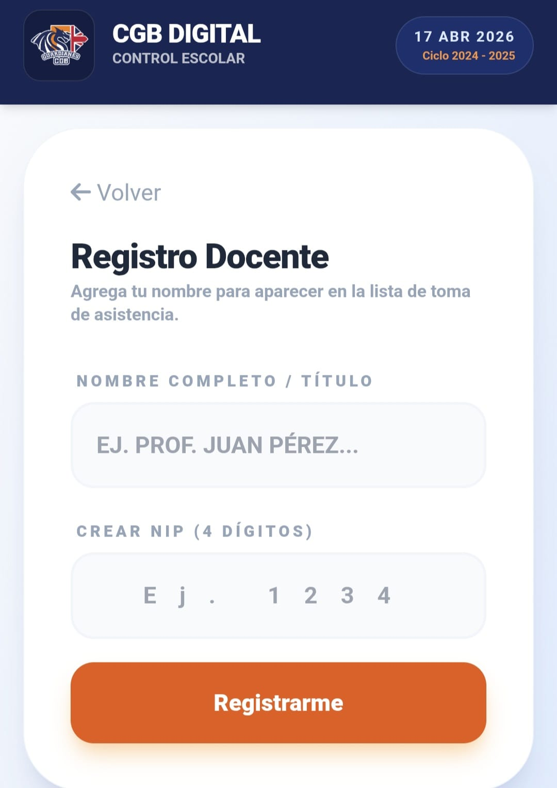
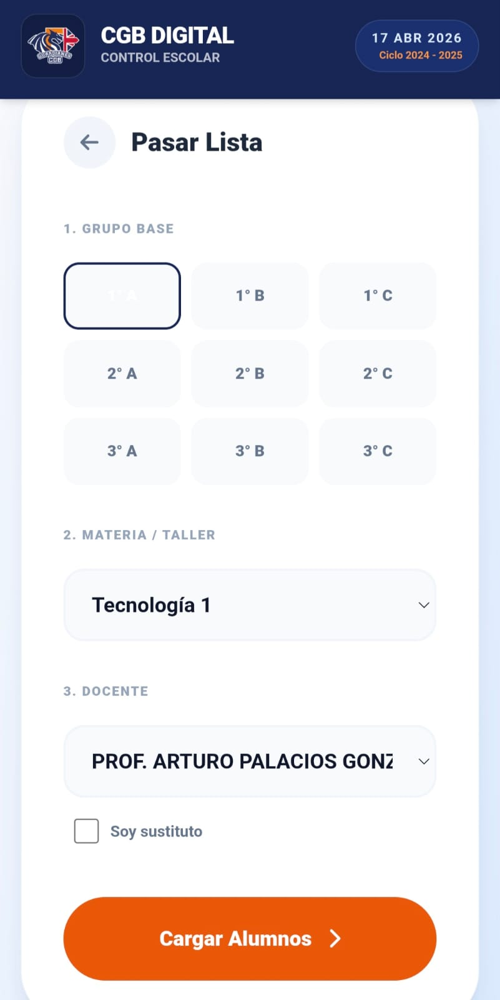
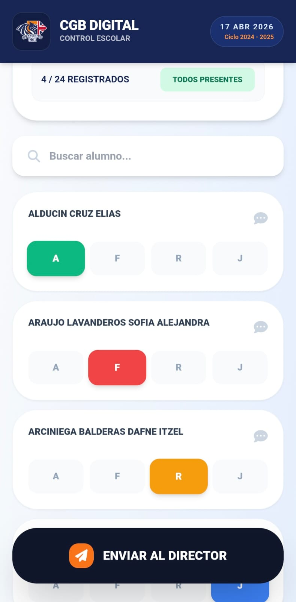
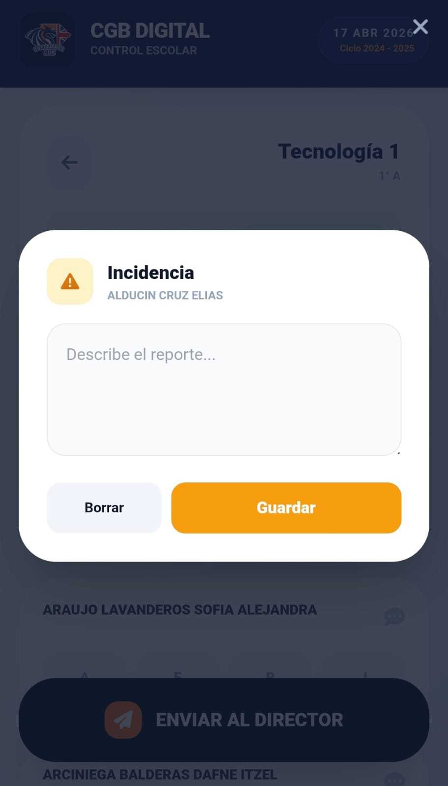
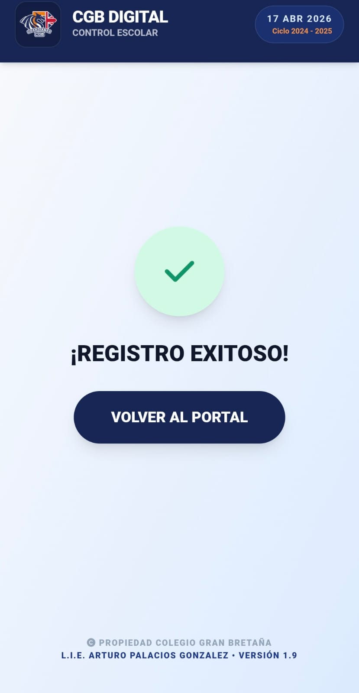

Toca cada paso para desplegar las instrucciones
Antes de poder pasar lista por primera vez, necesitas crear tu perfil de seguridad:
- En la pantalla principal, selecciona "Registro Nuevo Maestro".
- Escribe tu nombre completo o título (Ej. Prof. Juan Pérez).
- Crea un NIP de 4 dígitos. Este código es tu "firma electrónica", ¡no lo olvides!
- Presiona "Registrarme". ¡Listo! Solo necesitas hacer esto una vez en el ciclo escolar.

Falta subir la imagen paso1.jpeg a GitHub`;">Cada vez que entres a un salón, sigue estos pasos para abrir la lista correcta:
- Selecciona "Soy Maestro" en el inicio.
- Elige el Grupo Base al que le vas a dar clase (Ej. 1° A).
- Selecciona tu Materia.
*Nota: Si impartes un taller especial o tu materia no aparece, elige "➕ Crear nueva materia..." hasta abajo de la lista para agregarla. - Selecciona tu Nombre en la lista de docentes y presiona "Cargar Alumnos".
- El sistema te pedirá tu NIP de 4 dígitos por seguridad.

Falta subir la imagen paso2.jpeg a GitHub`;">En la pantalla de asistencia verás a todos los alumnos ordenados alfabéticamente. Tienes 4 botones por alumno:
💡 TIP: Usa el botón "TODOS PRESENTES" arriba a la derecha para ganar tiempo, y luego solo corrige a los que faltaron.
Alerta Temprana
Si ves un cuadro rojo parpadeando sobre el nombre de un alumno, significa que el sistema detectó que ya acumula 3 o más faltas en el ciclo. Presta especial atención a este alumno para intervenir a tiempo.

Falta subir la imagen paso3.jpeg a GitHub`;">Si ocurrió un incidente de conducta, un problema de salud, o simplemente quieres dejarle una nota a Dirección sobre un alumno en particular:
- Toca el ícono de mensaje/alerta en la esquina superior derecha de la tarjeta del alumno.
- Escribe el reporte detallado en la ventana que aparece.
- Presiona "Guardar".
El botón se quedará encendido en color amarillo para recordarte que el reporte está activo y se enviará junto con la lista.

Falta subir la imagen paso4.jpeg a GitHub`;">Una vez que hayas verificado que el contador de arriba diga que todos están registrados (Ej. 25/25 Registrados):
- Ve al final de la página.
- Presiona el botón negro gigante "ENVIAR AL DIRECTOR".
- Espera la pantalla verde de confirmación que dice "¡LOGRADO!".
Modo Sin Conexión
¿El internet de la escuela está fallando? No te preocupes. La aplicación tiene un Escudo Antifallos. Puedes seguir pasando lista normalmente; el sistema guardará todo en la memoria de tu celular de forma segura hasta que vuelvas a tener señal.

Falta subir la imagen paso5.jpeg a GitHub`;">